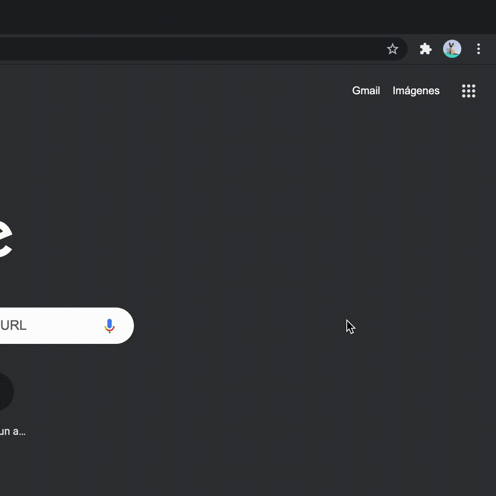

Modo Oscuro UC
¡Hola! Acabas de instalar la extensión "Modo Oscuro UC", la cual te permitirá aplicar
dark mode a los servicios de la UC.
Actualmente funciona sólo en el Portal UC.
También, se puede aplicar en Canvas de manera experimental, para eso debes hacer click en el ícono negro en la parte superior de tu navegador.

También puedes hacer click en el siguiente botón: